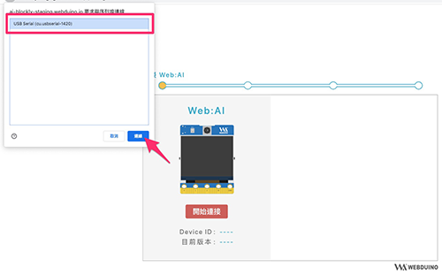

初始化設定 ( 第一次使用請看這裡 )
2022-12-02
Web:AI 開發板的韌體中使用了 2 種晶片，分別是主晶片 ( K210 ) 和 Wi-Fi 晶片 ( ESP8285 )。
第一次使用 Web:AI 開發板之前，需要先設定 Wi-Fi 及對晶片做韌體更新，將開發板升級到最新版本，才能順利使用最全面的功能。
設定頁面：Wi-Fi 設定頁面 ( 需要透過電腦的 Chrome 瀏覽器開啟 )
教學影片
歡迎參考下方教學影片：
教學步驟：Wi-Fi 設定
當拿到 Web:AI 開發板後，只要按照步驟教學或上方影片一步步操作，就可以完成初始化設定囉！
首先使用電腦打開 Chrome 瀏覽器進入 Wi-Fi 設定頁面。
如果 Chrome 版本低於 89，需要先將瀏覽器更新到最新版本！
將 Web:AI 開發板透過 USB 傳輸線連接到電腦。
按下「點擊開始設定」。

點擊「開始連接」。
選擇連接 Web:AI 的 USB，點擊「連接」。

電腦連接上 Web:AI 後會出現開發板的 Device ID 和現在的韌體版本。

在 Wi-Fi 連線畫面，選擇 Wi-Fi 並輸入密碼，按下「儲存連線」。

成功完成設定 Wi-Fi！

如果需要進行韌體更新，再接著進行下方步驟。
教學步驟：更新韌體
設定完 Wi-Fi 後，如果畫面有「已有新版本，點擊更新」，代表有新版本可以更新。
點擊「更新韌體」。

等待韌體更新，開發板螢幕會顯示更新進度，期間內請勿斷開與 USB 線的連接。

更新完成後，重新開機就可以開始使用 Web:AI 了！